案件 03｜バナー
クチュリエ「秋冬の手づくり特集」のPRバナー
依頼主：フェリシモ クチュリエ（手づくりキットをコレクション（頒布会）形式で販売するサイト）
依頼の概要
秋冬のカタログで特に人気の商品と、初回限定お試し価格の商品を集めた「秋冬の手づくり特集」を案内するバナーです。クチュリエの手づくりキットは、丁寧なレシピ（作り方説明書）と必要な素材がすべて届くので、はじめてさん（初心者）でも簡単に作れます。毎月届くので、続ける楽しみや上達していく楽しみもあります。
プロモーションのゴール
- 販売促進
- 大量のバナー露出による、訴求軸や表現方法の検証
- 自社では発見できなかった新たな訴求軸の発見
ターゲット
- 女性、25〜50歳、主婦
- 手づくりに興味がある、または手づくりが趣味の主婦の方
- 小物や雑貨が好きで、雑貨店めぐりが好き。気に入った小物を身につけたり、インテリアとして飾ったりする生活に充実感を覚える方
- テーブルクロスやコースターなどのキッチングッズ、子供用のバッグや手袋、おもちゃなどを手作りする時間を楽しんでいる方（またはやってみたい方）
- お子様が自立して、やや時間を持て余している40〜50歳代の女性
サービスの強み
- はじめてさんでも簡単で、とってもかわいく仕上げられる手づくりキット
- 毎月届くから、どんどん上達するのが嬉しい
- お得な初回お試しキャンペーンも実施中
- 若いママさん向けのかわいいキットから、大人の女性向けの品の良いレースキットまで幅広いラインナップ
テーマ（1つ選ぶ）
| テーマ1 はじめてさんでも簡単 | はじめての手作り雑貨でも簡単に作れる魅力にポイントを置く。例：「はじめてさんでも簡単！手づくり小物（雑貨）」「不器用な私でも簡単！手づくり小物入門」「写真つき説明書でカンタン！手づくり雑貨入門」 |
|---|---|
| テーマ2 かわいいオリジナルキット | かわいい動物のぬいぐるみや雑貨など、「かわいい」にポイントを置く。例：「とにかくかわいい！オリジナル（手づくり）キット」「えっ？コレって手づくりなの？」「ママが手づくり！子どものおもちゃ（洋服、ぬいぐるみ）」 |
| テーマ3 初回お試しキャンペーン | 初回のみ特別価格でお試しできるお得なキャンペーンにポイントを置く（ほかのテーマと組み合わせる）。例：「お得な初回お試し実施中」「期間限定 初回お試し商品も！」「初回お試し価格で手芸入門」 |
| テーマ4 フリー訴求 | 自由な発想で、ターゲットの心をつかむバナーを作る |
参考になるキーワード
- 過去の広告で効果があったもの：「秋はあったか手づくり」などの季節訴求、はじめてさん（初心者）でも簡単、初回お試しキャンペーン
- キャッチコピーになりそうなもの：クロスステッチ、パッチワーク、刺繍、手芸、手づくりキット、手づくり雑貨、手づくり小物、編み物、レース編み、こぎん刺し、不器用な私でも簡単、手づくりはじめてにオススメ、かわいい雑貨つくっちゃおう、ハンドメイド
必須事項
- Couturier のロゴを使う（提供素材を使用）
- テーマ3を訴求するときは「初回お試し価格」と表記する
- お客様の声を入れるときは「お客さまの声より」と併記する（個人名は入れない）
- 特集名を入れるときは「秋冬の手づくり特集」と記載する
ロゴの使い方
- 提供素材をそのまま使い、ある程度の余白を取る
- 色味を変えない。背景色の指定はないが、ロゴが読みにくくなる色は NG
- 縦横比を変える拡大・縮小、回転、反転（鏡）、切り抜き、縁取りは NG
- ロゴを文章の一部として使うのは NG
写真・イラスト
- 写真は提供素材を使う。常識の範囲のトリミングは可
- すべての商品が初回お試し価格ではない。初回お試し価格でない商品の写真を使うときは、誤解されない表現にする
- 価格を入れるときは、商品写真と価格が食い違わないようにする
- イラストは自作したものだけを使う
- GIF に変換するときは、ロゴの色調が大きくずれないように注意する
使ってはいけない表現
- 商品でコラボした作家さんの名前
- すべての商品が初回お試し価格であると誤解させる表現
- 小物の EC サイトと誤解させるような表現
- 断定した表現（例：誰でも、必ず、絶対）
- 他社のサービスと比較する表現、他社を引き合いに出したり悪く言ったりする表現
- 事実と異なる表現
素材
素材をまとめてダウンロード（ZIP・6.6 MB）全32点。1つずつ保存するときは、画像を開いて保存してください。
ロゴ・QRコード2点
- couturier_logo_transparent.png
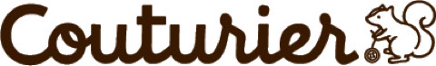
couturier_logo.jpg
写真・画像20点
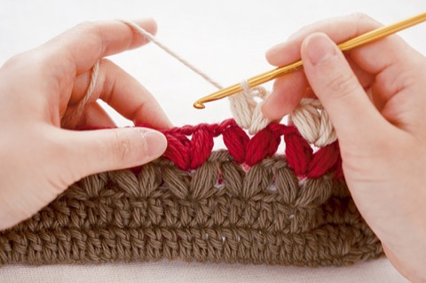
sozai_01.jpg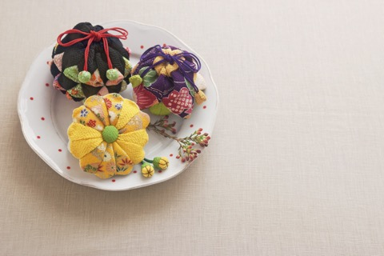
sozai_02.jpg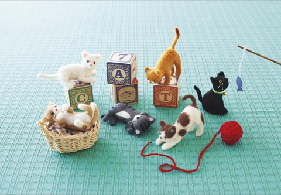
sozai_03.jpg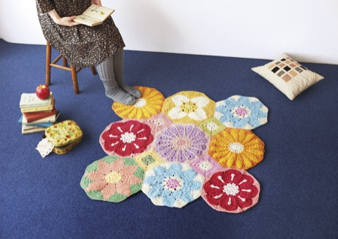
sozai_04.jpg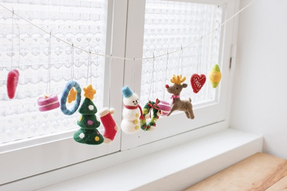
sozai_05.jpg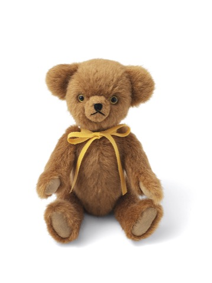
sozai_06.jpg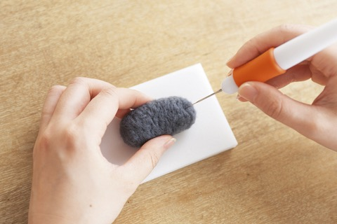
sozai_07.jpg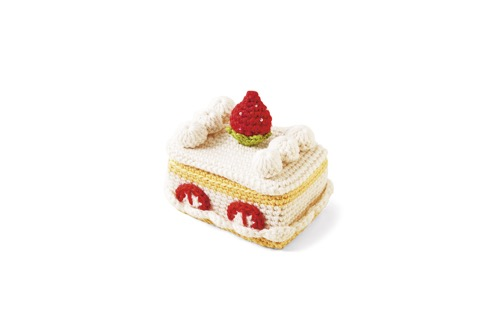
sozai_08.jpg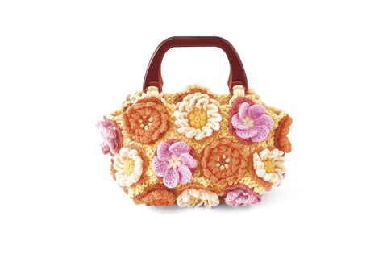
sozai_09.jpg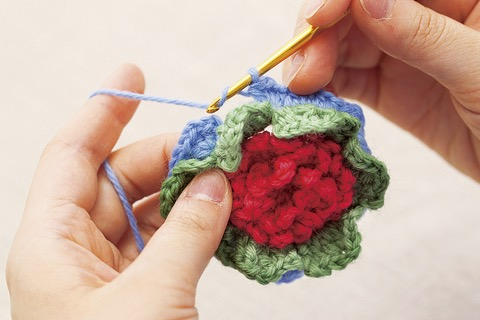
sozai_10.jpg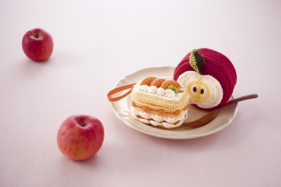
sozai_11.jpg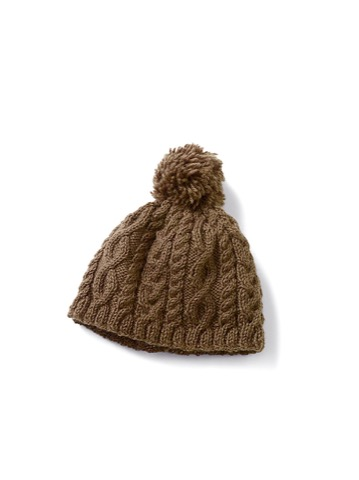
sozai_12.jpg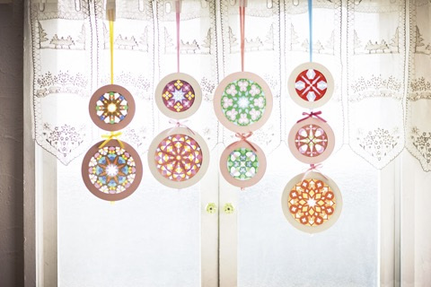
sozai_13.jpg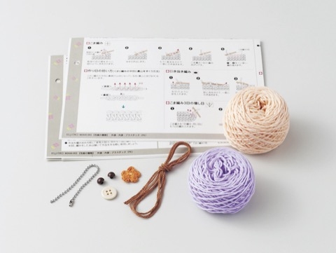
sozai_14.jpg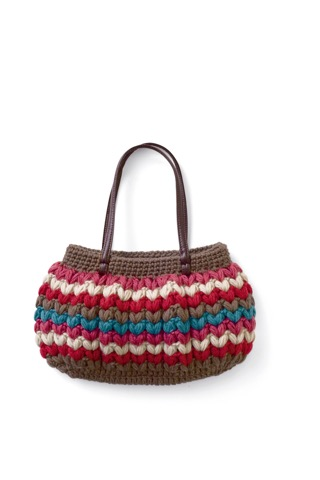
sozai_15.jpg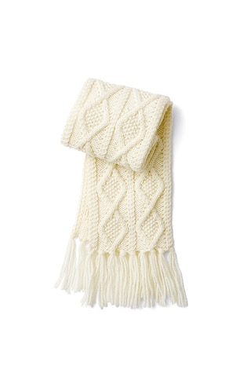
sozai_16.jpg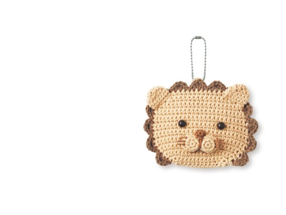
sozai_17.jpg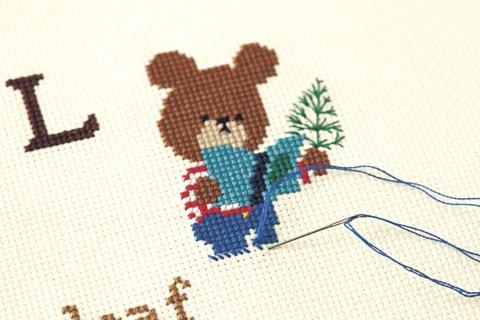
sozai_18.jpg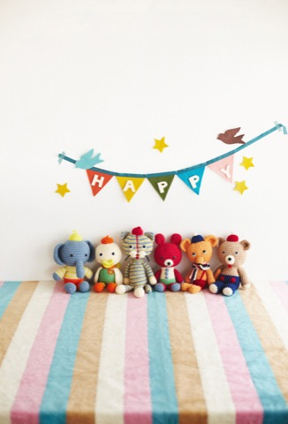
sozai_19.jpg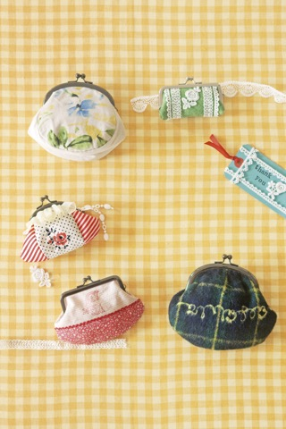
sozai_20.jpg
見本（他者の作品）10点
見本は過去の応募作品です。見すぎると発想が引っ張られるので、自分のラフを描いてから参考程度に見てください。
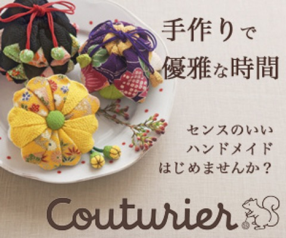
sample_01.jpg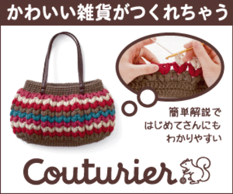
sample_02.gif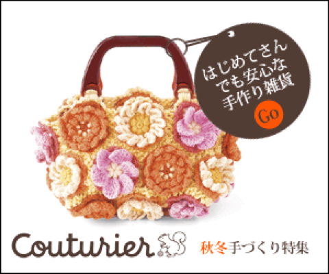
sample_03.gif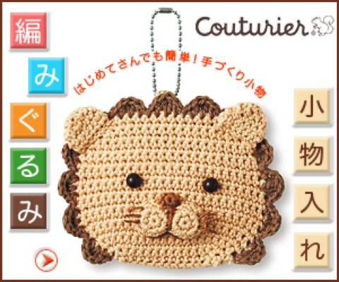
sample_04.jpg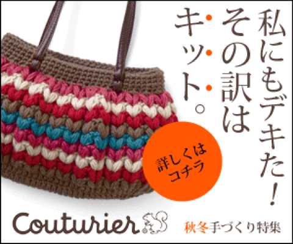
sample_05.gif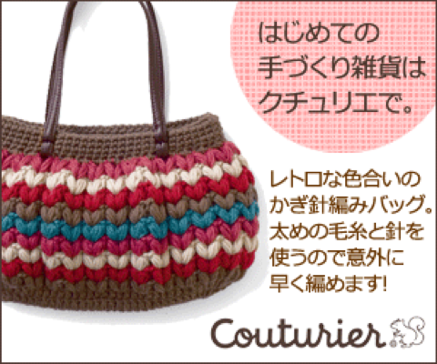
sample_06.gif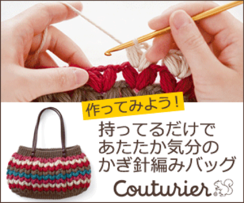
sample_07.gif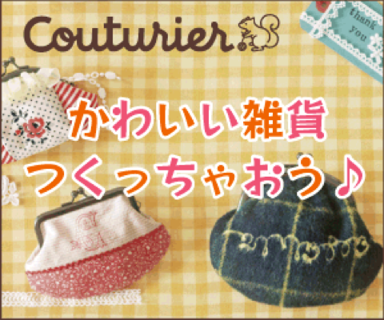
sample_08.gif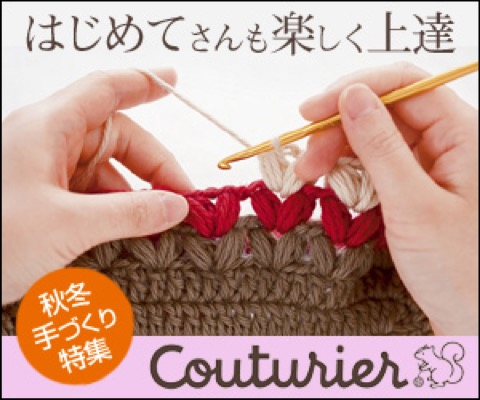
sample_09.jpg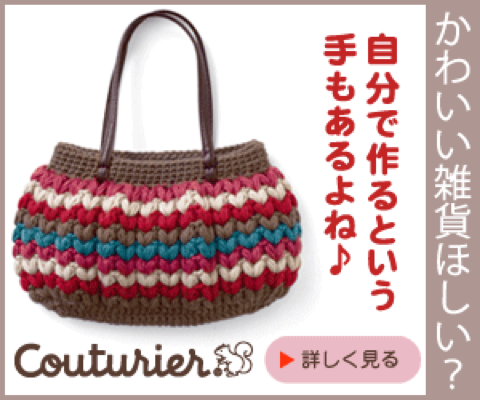
sample_10.gif
提出前のチェック
チェックの状態は、この端末のブラウザにだけ保存されます。